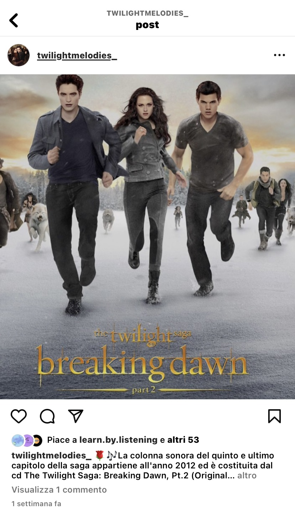
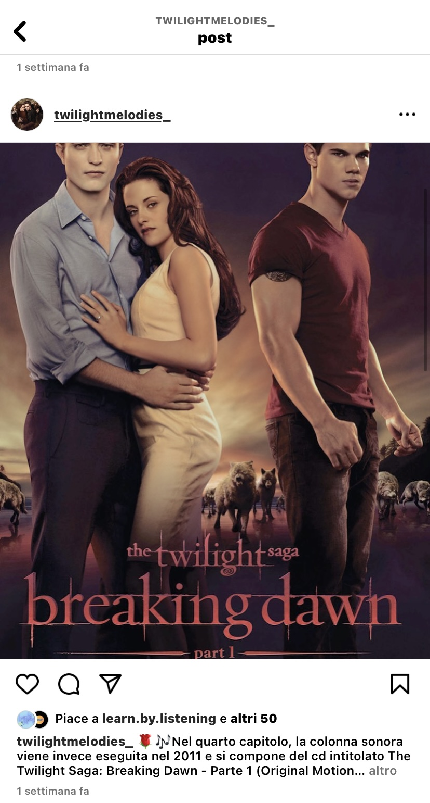

1. Benchmarking
Obiettivi: l'obiettivo del sito web è quello di fornire una playlist completa, suddivisa per i film che la compongono, della colonna sonora della saga.
Target utente: il target utente a cui questo sito è principalmente rivolto sono i seguaci della serie, decisamente molto vari, poiché possono comprendere età che vanno dai 14 ai 50 anni.
Competitors
Esistono già in rete diversi siti web dedicati alla colonna sonora utilizzata nella serie in questione, ma che differiscono in larga parte dal mio progetto per diverse ragioni. Tra i tanti esistenti, ho scelto in particolare come competitors Soundcloud.com e Musicstax.com. I due siti si distinguono fin da subito nella presentazione e organizzazione dei contenuti, siccome raggruppano tutti i brani musicali della saga in un'unica playlist, senza l'aggiunta di didascalie per descriverli brevemente e senza la presenza di un quiz per intrattenere gli utenti.
2. Struttura e layout
Architettura del sito:

Wireframe:
Home

Film

Info

Contatti

Documentazione

Look and feel
Font: il carattere che ho deciso di adottare è il Twilight New Moon, che è stato appositamente creato per realizzare i titoli dei film e dei libri della saga, e che nel mio sito ho deciso di utilizzare per le intestazioni, il menù di navigazione e il footer. L'IM Fell Great Primer è invece il carattere che ho utilizzato per il testo presente nelle sezioni e nei vari paragrafi.
Colori: per la creazione della mia pagina web ho scelto di utilizzare come colori prevalenti il grigio scuro [rgb (51, 47, 46) ] per le intestazioni, il menù di navigazione, il footer, e lo sfondo delle sezioni (anche se sfumato), e il colore grigio chiaro [rgb (204, 198, 202) ] per le parti di testo. Più nello specifico, sono stati scelti questi due colori per richiamare le tonalità presenti nell'immagine di sfondo e sottolineare l'atmosfera cupa e gotica della serie. Oltre al colore grigio, è stato utilizzato il colore bianco [rgb (253, 253, 253)] per il contorno dei titoli presenti nel menù di navigazione.
3. Linguaggi e strumenti
Linguaggi: HTML e CSS.
Strumenti: Visual Studio Code (per editare il sito), Fontawesome (per le icone), Google Fonts e Dafont.com (per il carattere del testo), Adobe Color (per i colori), Canva (per disegnare l'architettura del sito e il wireframe), Google Analytics (per visualizzare il numero di utenti e le visite sul sito web), Github (per la pubblicazione del sito), Spotify (per ascoltare le colonne sonore), Wikipedia (per acquisire le informazioni sulle colonne sonore), Picsart (per modificare l'immagine di sfondo della homepage), Pixabay (per l'immagine di sfondo di tutte le pagine) e Flickr (per l'immagine presente nella homepage e le immagini di copertina delle playlist di Spotify). Sia le immagini prese da Pixabay che le immagini prese da Flickr hanno la Licenza Creative Commons, tranne le due immagini di copertina di Breaking Dawn Part 1 e Breaking Dawn Part 2 (usate nelle playlist e nei post su Instagram) che sono coperte da copyright.
Communication Strategy
1. Background
Soundcloud.com: si tratta di un sito web che permette di ascoltare per intero i brani musicali che compongono la colonna sonora della serie cinematografica di Twilight, raggruppati però in un’unica playlist e non suddivisi per film. Inoltre, non viene fornita alcuna informazione riguardante la rispettiva colonna sonora e non è nemmeno offerta la possibilità di vedere i video corrispondenti.
Musicstax.com: si tratta di una pagina web che consente di ascoltare in anteprima le canzoni appartenenti alla colonna sonora della saga di Twilight grazie al collegamento alla piattaforma di Spotify. Ma anche qui, così come per Soundcloud.com, i brani musicali sono raggruppati in una sola playlist, senza nessuna indicazione relativa alla colonna sonora e senza alcun link per visualizzarne i video.
Twilight Melodies rappresenta invece un sito web completo poiché fornisce ai propri utenti sia le playlist per ascoltare gli audio, che i link per visualizzare i video, di ciascuna melodia della colonna sonora. Inoltre, ciò che la pagina web offre di più rispetto agli altri siti, è sia l'opportunità di disporre di tutte le melodie della saga suddivise per film e non raggruppate in un'unica playlist, organizzate in ordine alfabetico per facilitare gli utenti nella ricerca delle canzoni, sia la possibilità di svolgere un piccolo quiz per verificare la padronanza dei contenuti della serie.
2. Obiettivi comunicativi
L'obiettivo di questo progetto è stato divulgare e far conoscere il più a fondo possibile i brani musicali presenti nella saga di Twilight, oltre a cercare di raggiungere 300 visualizzazioni del sito web e 50 like ai post su Instagram della pagina ufficiale.
3. Target, audience e messaggio
Il target a cui questo sito si rivolge primariamente, sono i fan della saga, appartenenti alla fascia di età compresa tra i 14 e i 50 anni. Questo target è inoltre principalmente raggiungibile tramite il social network Instagram (in particolar modo gli under 35) e il social network Facebook (specialmente per la fascia di età che va dai 35 ai 50 anni). Verrà dunque creata una pagina Instagram, dedicata al sito web, per raggiungerli più facilmente. Il sito in questione si rivolge anche ai non seguaci della serie, ma incuriositi dal conoscerne le canzoni, e agli appassionati di musica funk, pop, folk e rock.
4. Promozione
Il sito web verrà promosso attraverso la condividione del relativo link sulle chat individuali e di gruppo di WhatsApp, ma anche attraverso la creazione di una pagina Instagram interamente dedicata, che verrà sponsorizzata sia su Whatsapp che sul mio profilo Instagram personale, dove verranno pubblicate varie storie per favorirne la visualizzazione e condivisione.
5. Valutazione dei risultati
Gli obiettivi sono stati raggiunti, poiché attraverso la condivisione del link del sito web e della rispettiva pagina Instagram tramite WhatsApp, sono riuscita ad avere più like e visualizzazioni rispetto a quanto mi ero prefissata.
Visite al sito:
Sponsorizzazione:

Like ai post su Instagram:

Commenti: